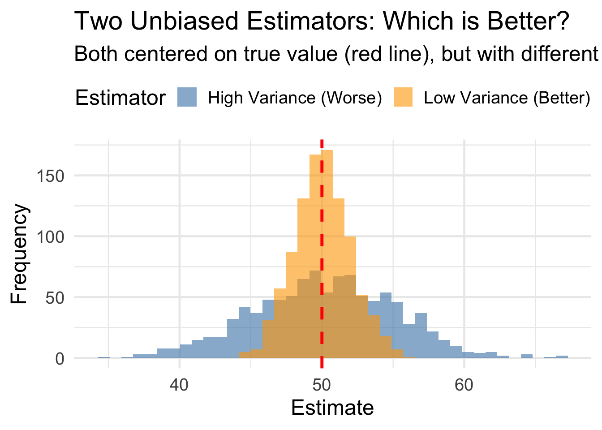
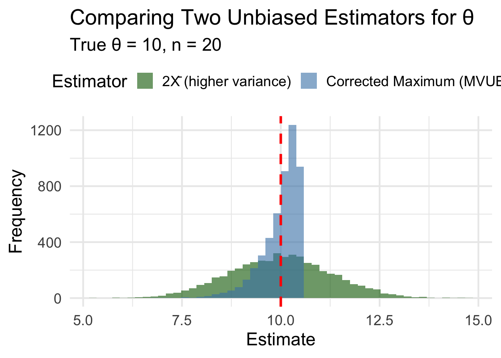
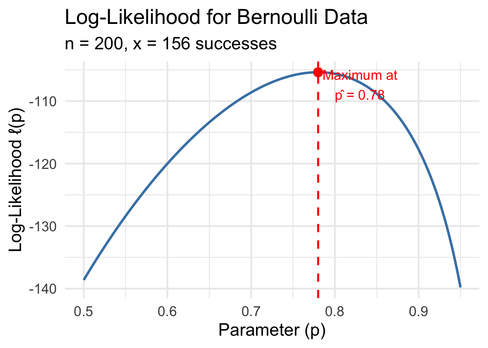
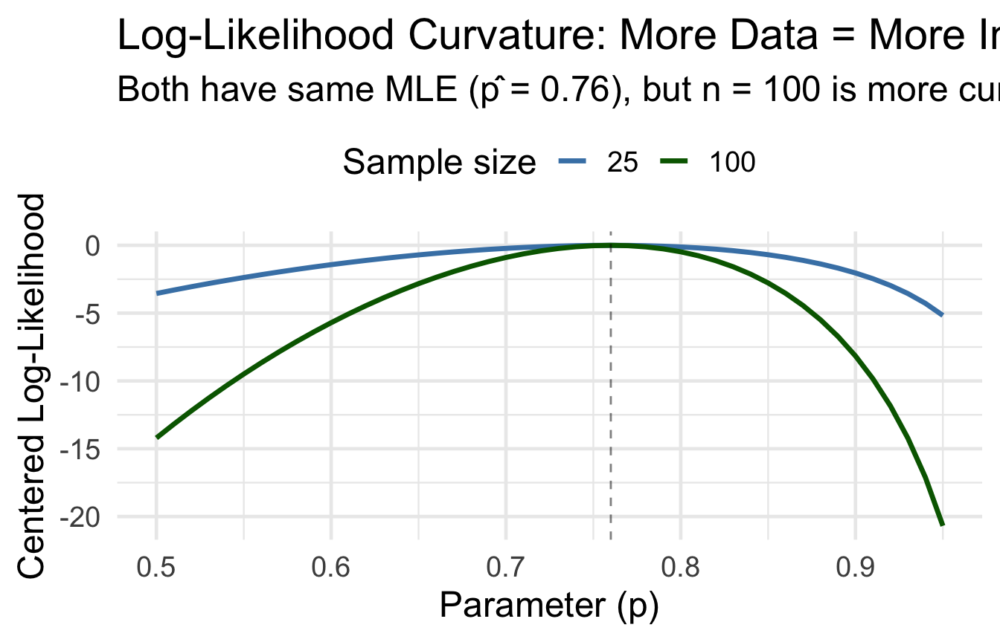
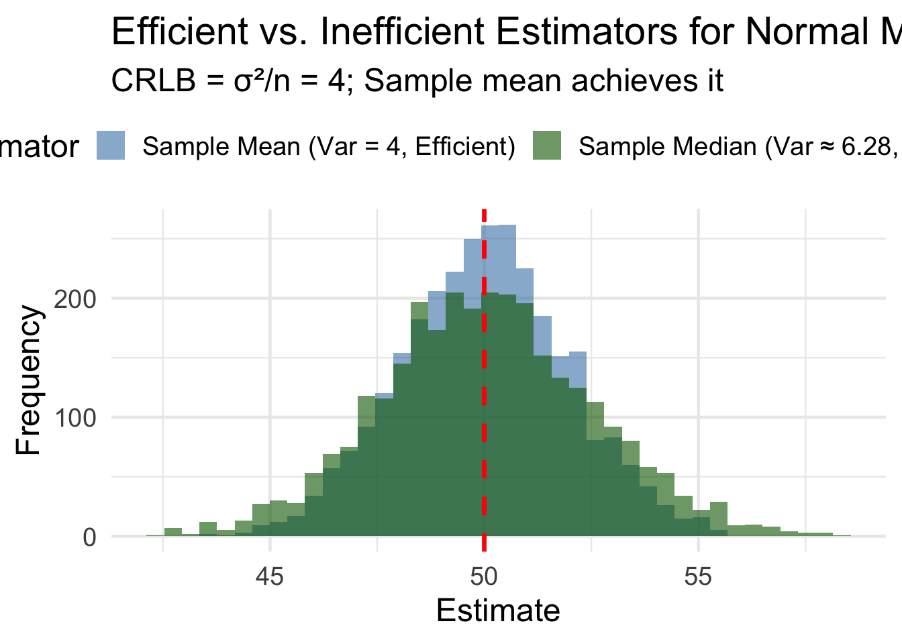
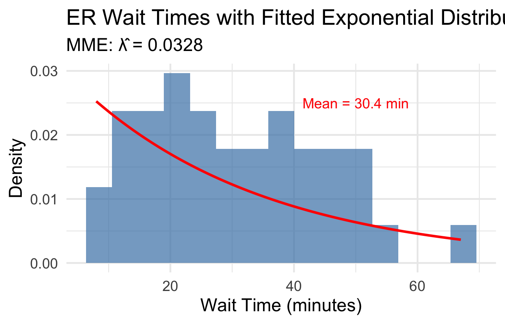
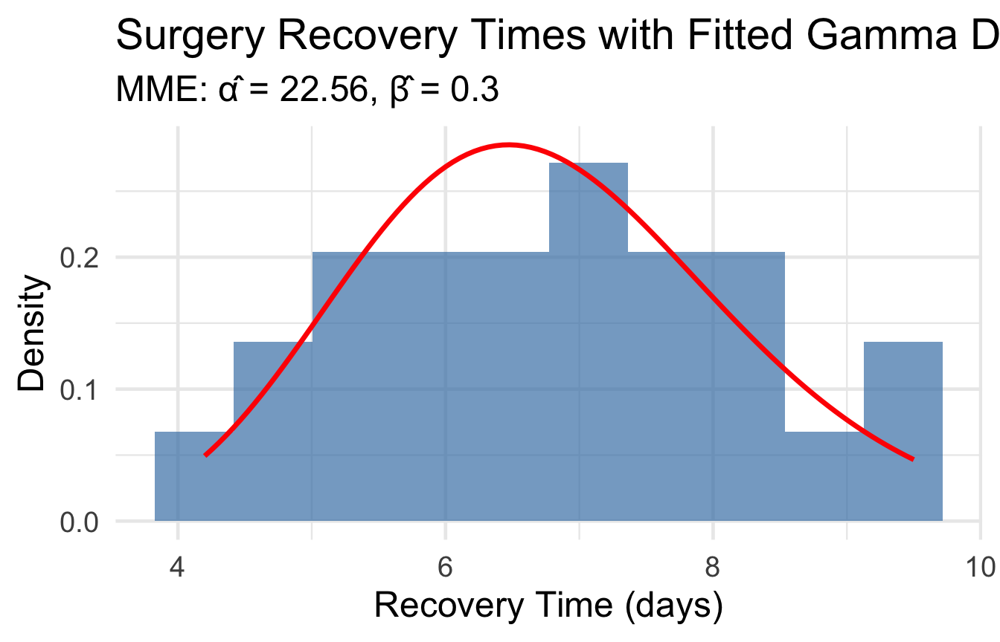

# Suppose 15 out of 20 patients respond
n <- 20; x <- 15
p_hat_A <- x / n
p_hat_B <- (x + 1) / (n + 2)
cat("Researcher A's estimate:", p_hat_A, "\n")Researcher A's estimate: 0.75 Researcher B's estimate: 0.7272727BSTA 551: Statistical Inference
2026-01-12
Key concepts from Lesson 2:
Today’s Goals:
A clinical trial tests the effectiveness of a new antibiotic. Two researchers propose different estimators for the true response rate \(p\):
Researcher A: Use \(\hat{p}_A = X/n\) (sample proportion)
Researcher B: Use \(\hat{p}_B = (X + 1)/(n + 2)\) (adjusted proportion)
Both estimators are functions of the same data. Which should we use?
Recall from Lesson 2: There can be many unbiased estimators for the same parameter!
Example: For a symmetric distribution with mean \(\mu\):
The Key Question
If two estimators are both unbiased, how do we choose between them?

Answer: Among unbiased estimators, prefer the one with smaller variance.
Definition (Devore 7.1)
The Minimum Variance Unbiased Estimator (MVUE) of a parameter \(\theta\) is the estimator \(\hat{\theta}\) such that:
If \(\hat{\theta}_1\) and \(\hat{\theta}_2\) are both unbiased for \(\theta\), we prefer the one with smaller variance.
Intuition: Among estimators that are “correct on average,” we want the most precise one.
Setup: \(X_1, \ldots, X_n \sim \text{Uniform}[0, \theta]\)
Two unbiased estimators for \(\theta\):
\(\hat{\theta}_1 = 2\bar{X}\) (since \(E(X_i) = \theta/2\), so \(E(2\bar{X}) = \theta\))
\(\hat{\theta}_2 = \frac{n+1}{n} \cdot \max(X_1, \ldots, X_n)\) (corrected maximum)
Question: Which has smaller variance?
For \(\hat{\theta}_1 = 2\bar{X}\): \[\text{Var}(\hat{\theta}_1) = \text{Var}(2\bar{X}) = 4 \cdot \text{Var}(\bar{X}) = 4 \cdot \frac{\sigma^2}{n} = 4 \cdot \frac{\theta^2/12}{n} = \frac{\theta^2}{3n}\]
For \(\hat{\theta}_2 = \frac{n+1}{n} \cdot \max(X_i)\), it can be shown that: \[\text{Var}(\hat{\theta}_2) = \frac{\theta^2}{n(n+2)}\]
Comparison: For \(n > 1\): \[\frac{\theta^2}{n(n+2)} < \frac{\theta^2}{3n}\]
The corrected maximum \(\hat{\theta}_2\) is more efficient!
theta <- 10 # True upper bound
n <- 20
n_sims <- 5000
# Simulate both estimators
uniform_sim <- tibble(sim = 1:n_sims) |>
mutate(
data = map(sim, \(s) runif(n, 0, theta)),
theta_hat_1 = map_dbl(data, \(d) 2 * mean(d)),
theta_hat_2 = map_dbl(data, \(d) (n + 1) / n * max(d))
)
# Compare variances
uniform_sim |>
summarize(
`Var(2*X̄)` = var(theta_hat_1),
`Var(corrected max)` = var(theta_hat_2),
`Theoretical Var(2*X̄)` = theta^2 / (3 * n),
`Theoretical Var(corrected max)` = theta^2 / (n * (n + 2))
) |>
pivot_longer(everything()) |>
mutate(value = round(value, 4))# A tibble: 4 × 2
name value
<chr> <dbl>
1 Var(2*X̄) 1.67
2 Var(corrected max) 0.218
3 Theoretical Var(2*X̄) 1.67
4 Theoretical Var(corrected max) 0.227
The corrected maximum is more concentrated around the true value!
Definition (Preview - Full treatment in Lesson 4)
The likelihood function \(L(\theta)\) is the joint probability/density of the observed data, viewed as a function of the parameter \(\theta\):
\[L(\theta) = \prod_{i=1}^n f(x_i; \theta)\]
where \(f\) is the pmf (discrete) or pdf (continuous).
Key Idea: The likelihood tells us how “likely” different parameter values are, given our observed data.
Taking the logarithm converts products to sums:
\[\ell(\theta) = \ln L(\theta) = \sum_{i=1}^n \ln f(x_i; \theta)\]
Why use log-likelihood?
The score function is the first derivative: \(\ell'(\theta) = \frac{d}{d\theta}\ell(\theta)\)
For \(X_1, \ldots, X_n \sim \text{Bernoulli}(p)\) with \(x = \sum x_i\) successes:
Likelihood: \[L(p) = p^x(1-p)^{n-x}\]
Log-likelihood: \[\ell(p) = x\ln(p) + (n-x)\ln(1-p)\]
Score function: \[\ell'(p) = \frac{x}{p} - \frac{n-x}{1-p}\]

The curvature of this function contains information about how precisely we can estimate \(p\).
Key Observation: The more curved the log-likelihood is at its peak, the more precisely we can estimate the parameter.

More curvature = more information = more precise estimates
Definition (Devore 7.4)
Let \(f(x; \theta)\) be a pmf or pdf. The Fisher Information in a single observation \(X\) is:
\[I(\theta) = E\left[-\frac{\partial^2}{\partial\theta^2} \ln f(X; \theta)\right] = E[-\ell''(\theta)]\]
Equivalently: \[I(\theta) = E\left[\left(\frac{\partial}{\partial\theta} \ln f(X; \theta)\right)^2\right] = E[(\ell'(\theta))^2] = \text{Var}(\ell'(\theta))\]
Intuition: Fisher information measures the expected curvature of the log-likelihood.
For a random sample \(X_1, \ldots, X_n\):
\[I_n(\theta) = n \cdot I(\theta)\]
The information is additive! Each observation contributes the same amount of information.
Key Properties
For \(X \sim \text{Bernoulli}(p)\): \(f(x; p) = p^x(1-p)^{1-x}\)
Step 1: Log-likelihood for single observation: \[\ln f(x; p) = x\ln(p) + (1-x)\ln(1-p)\]
Step 2: Second derivative: \[\frac{\partial^2}{\partial p^2}\ln f(x; p) = -\frac{x}{p^2} - \frac{1-x}{(1-p)^2}\]
Step 3: Take expectation (multiply by -1): \[I(p) = E\left[\frac{X}{p^2} + \frac{1-X}{(1-p)^2}\right]\]
\[= \frac{E(X)}{p^2} + \frac{1 - E(X)}{(1-p)^2} = \frac{p}{p^2} + \frac{1-p}{(1-p)^2}\]
\[= \frac{1}{p} + \frac{1}{1-p} = \frac{1}{p(1-p)}\]
For a sample of size \(n\): \[I_n(p) = \frac{n}{p(1-p)}\]
For \(X \sim N(\mu, \sigma^2)\) with \(\sigma\) known:
\[f(x; \mu) = \frac{1}{\sqrt{2\pi}\sigma}e^{-(x-\mu)^2/(2\sigma^2)}\]
\[\ln f(x; \mu) = -\frac{1}{2}\ln(2\pi\sigma^2) - \frac{(x-\mu)^2}{2\sigma^2}\]
\[\frac{\partial}{\partial\mu}\ln f = \frac{x-\mu}{\sigma^2}, \quad \frac{\partial^2}{\partial\mu^2}\ln f = -\frac{1}{\sigma^2}\]
\[I(\mu) = E\left[\frac{1}{\sigma^2}\right] = \frac{1}{\sigma^2}\]
For a sample: \(I_n(\mu) = \frac{n}{\sigma^2}\)
For \(X \sim \text{Exponential}(\lambda)\): \(f(x; \lambda) = \lambda e^{-\lambda x}\)
Log-likelihood: \(\ln f(x; \lambda) = \ln(\lambda) - \lambda x\)
Derivatives: \[\frac{\partial}{\partial\lambda}\ln f = \frac{1}{\lambda} - x\] \[\frac{\partial^2}{\partial\lambda^2}\ln f = -\frac{1}{\lambda^2}\]
Fisher Information: \[I(\lambda) = E\left[\frac{1}{\lambda^2}\right] = \frac{1}{\lambda^2}\]
For a sample: \(I_n(\lambda) = \frac{n}{\lambda^2}\)
Exercise: For the Poisson distribution with parameter \(\mu\), where \(f(x; \mu) = \frac{e^{-\mu}\mu^x}{x!}\):
Solution:
Cramér-Rao Inequality (Devore 7.4)
Let \(X_1, \ldots, X_n\) be a random sample from \(f(x; \theta)\) whose support does not depend on \(\theta\). If \(T = t(X_1, \ldots, X_n)\) is an unbiased estimator of \(\theta\), then:
\[\text{Var}(T) \geq \frac{1}{I_n(\theta)} = \frac{1}{n \cdot I(\theta)}\]
The right-hand side is the Cramér-Rao Lower Bound (CRLB).
In words: No unbiased estimator can have variance smaller than \(1/I_n(\theta)\).
The Cramér-Rao bound tells us:
Efficiency Definition
An unbiased estimator \(T\) is efficient if: \[\text{Var}(T) = \frac{1}{I_n(\theta)}\]
An efficient estimator is the MVUE!
For \(X_1, \ldots, X_n \sim \text{Bernoulli}(p)\):
Estimator: \(\hat{p} = \bar{X} = \frac{\sum X_i}{n}\)
Variance: \(\text{Var}(\hat{p}) = \frac{p(1-p)}{n}\)
Fisher Information: \(I_n(p) = \frac{n}{p(1-p)}\)
CRLB: \(\frac{1}{I_n(p)} = \frac{p(1-p)}{n}\)
\[\text{Var}(\hat{p}) = \frac{p(1-p)}{n} = \text{CRLB} \checkmark\]
\(\hat{p}\) is efficient and is the MVUE of \(p\)!
For \(X_1, \ldots, X_n \sim N(\mu, \sigma^2)\) with known \(\sigma\):
Estimator: \(\bar{X}\)
Variance: \(\text{Var}(\bar{X}) = \frac{\sigma^2}{n}\)
Fisher Information: \(I_n(\mu) = \frac{n}{\sigma^2}\)
CRLB: \(\frac{1}{I_n(\mu)} = \frac{\sigma^2}{n}\)
\[\text{Var}(\bar{X}) = \frac{\sigma^2}{n} = \text{CRLB} \checkmark\]
\(\bar{X}\) is efficient and is the MVUE of \(\mu\)!

For normal data, the sample median is unbiased for \(\mu\) but has:
\[\text{Var}(\tilde{X}) \approx \frac{\pi}{2} \cdot \frac{\sigma^2}{n} \approx 1.57 \cdot \frac{\sigma^2}{n}\]
Efficiency of median: \[\text{Efficiency} = \frac{\text{CRLB}}{\text{Var}(\tilde{X})} = \frac{\sigma^2/n}{1.57 \cdot \sigma^2/n} \approx 0.64\]
The median is only about 64% as efficient as the mean for normal data.
We need about 1.57 times as many observations with the median to achieve the same precision as the mean!
A clinical trial measures systolic BP reduction (mmHg). Assume \(N(\mu, \sigma^2 = 100)\).
n <- 30
sigma_sq <- 100
# CRLB for μ
crlb <- sigma_sq / n
# Variance of sample mean
var_xbar <- sigma_sq / n
# Efficiency check
cat("CRLB for μ:", round(crlb, 3), "\n")CRLB for μ: 3.333 Var(X̄): 3.333 Is X̄ efficient? TRUE # Sample data
bp_data <- c(12.3, 8.7, 15.2, 10.1, 7.4, 14.8, 11.2, 9.5, 13.1, 16.2,
8.1, 12.5, 10.8, 14.3, 11.7, 9.2, 15.0, 13.4, 7.9, 12.1,
10.5, 8.3, 14.1, 11.5, 13.8, 9.8, 11.9, 12.7, 10.3, 14.6)
cat("MVUE of μ (sample mean):", round(mean(bp_data), 2), "mmHg\n")MVUE of μ (sample mean): 11.7 mmHgStandard Error: 1.83 mmHgNot all unbiased estimators achieve the CRLB!
Example: Uniform[0, \(\theta\)] distribution
Two unbiased estimators:
Neither achieves CRLB = \(\theta^2/n\)! Why?
The support of Uniform[0, \(\theta\)] depends on \(\theta\), violating a regularity condition.
The Cramér-Rao inequality requires:
Examples where CRLB doesn’t apply:
Warning
Always check regularity conditions before applying the CRLB!
Finding the MVUE
Key Results:
| Distribution | Parameter | MVUE | CRLB |
|---|---|---|---|
| Bernoulli(\(p\)) | \(p\) | \(\bar{X}\) | \(p(1-p)/n\) |
| Normal(\(\mu, \sigma^2\)) | \(\mu\) | \(\bar{X}\) | \(\sigma^2/n\) |
| Exponential(\(\lambda\)) | \(\lambda\) | See note | \(\lambda^2/n\) |
| Poisson(\(\mu\)) | \(\mu\) | \(\bar{X}\) | \(\mu/n\) |
We’ve learned to evaluate estimators. Now: How do we construct them?
Two major constructive methods:
Key Idea
Both methods give us systematic recipes for deriving estimators from any specified distribution.
Definitions (Devore 7.2)
Population Moments:
Sample Moments:
Method of Moments Estimators (MMEs)
To estimate \(m\) unknown parameters \(\theta_1, \ldots, \theta_m\):
The idea: If the population and sample moments should be “close,” we can estimate parameters by equating them.
Setup: \(X_1, \ldots, X_n \sim \text{Exponential}(\lambda)\) where \(\lambda\) is the rate parameter.
Goal: Find the MME for \(\lambda\).
Step 1: Population moment: \(E(X) = 1/\lambda\)
Step 2: Set equal to sample moment: \(\frac{1}{\lambda} = \bar{X}\)
Step 3: Solve: \(\hat{\lambda}_{MME} = \frac{1}{\bar{X}}\)
Intuition
If the population mean is \(1/\lambda\), and we estimate the population mean with \(\bar{X}\), then we estimate \(\lambda\) with \(1/\bar{X}\).
Emergency room wait times are often modeled with an exponential distribution.
# Wait times (minutes) for 40 patients
wait_times <- c(12, 45, 8, 23, 67, 15, 31, 42, 19, 56,
28, 11, 38, 22, 49, 17, 33, 25, 41, 14,
52, 9, 36, 27, 44, 18, 29, 47, 21, 35,
13, 39, 24, 51, 16, 32, 46, 20, 37, 26)
# Method of moments estimate for λ (per minute)
lambda_hat <- 1 / mean(wait_times)
cat("Sample mean wait time:", round(mean(wait_times), 2), "minutes\n")Sample mean wait time: 30.45 minutesMME of λ: 0.0328 per minuteMME of λ: 1.97 per hour# Compare empirical distribution to fitted exponential
tibble(wait_time = wait_times) |>
ggplot(aes(x = wait_time)) +
geom_histogram(aes(y = after_stat(density)), bins = 15,
fill = "steelblue", alpha = 0.7) +
stat_function(fun = dexp, args = list(rate = lambda_hat),
color = "red", linewidth = 1.2) +
labs(title = "ER Wait Times with Fitted Exponential Distribution",
subtitle = str_glue("MME: λ̂ = {round(lambda_hat, 4)}"),
x = "Wait Time (minutes)", y = "Density") +
annotate("text", x = 50, y = 0.025,
label = str_glue("Mean = {round(mean(wait_times), 1)} min"),
color = "red", size = 5)
Setup: \(X_1, \ldots, X_n \sim N(\mu, \sigma^2)\)
Goal: Find MMEs for \(\mu\) and \(\sigma^2\).
Population moments:
Set equal to sample moments:
From the two equations:
\[\hat{\mu}_{MME} = \bar{X}\]
\[\hat{\sigma}^2_{MME} = \frac{1}{n}\sum X_i^2 - \bar{X}^2 = \frac{1}{n}\sum(X_i - \bar{X})^2\]
Note on Bias
The MME for \(\sigma^2\) divides by \(n\), not \(n-1\). This means the MME is biased!
\[E(\hat{\sigma}^2_{MME}) = \frac{n-1}{n}\sigma^2\]
The usual sample variance \(S^2\) with \(n-1\) in the denominator is unbiased.
Setup: \(X_1, \ldots, X_n \sim \text{Gamma}(\alpha, \beta)\)
Moments:
MME equations: \[\bar{X} = \alpha\beta\] \[\frac{1}{n}\sum X_i^2 = \alpha(\alpha+1)\beta^2\]
Solutions (after algebra): \[\hat{\alpha} = \frac{\bar{X}^2}{\frac{1}{n}\sum X_i^2 - \bar{X}^2} = \frac{\bar{X}^2}{\hat{\sigma}^2} \quad \quad \hat{\beta} = \frac{\frac{1}{n}\sum X_i^2 - \bar{X}^2}{\bar{X}} = \frac{\hat{\sigma}^2}{\bar{X}}\]
Recovery times after surgery often follow a gamma distribution.
# Recovery times (days) for 25 patients
recovery_times <- c(4.2, 6.8, 5.1, 8.3, 7.2, 4.9, 6.1, 9.5, 5.7, 7.8,
6.4, 8.1, 5.3, 7.5, 6.9, 4.5, 8.7, 5.9, 7.1, 6.2,
9.2, 5.5, 7.4, 6.6, 8.4)
# Calculate sample moments
x_bar <- mean(recovery_times)
second_moment <- mean(recovery_times^2)
# MME for gamma parameters
alpha_hat <- x_bar^2 / (second_moment - x_bar^2)
beta_hat <- (second_moment - x_bar^2) / x_bar
cat("Sample mean:", round(x_bar, 2), "days\n")Sample mean: 6.77 daysMME of α: 22.56 MME of β: 0.3 daystibble(recovery_time = recovery_times) |>
ggplot(aes(x = recovery_time)) +
geom_histogram(aes(y = after_stat(density)), bins = 10,
fill = "steelblue", alpha = 0.7) +
stat_function(fun = dgamma,
args = list(shape = alpha_hat, scale = beta_hat),
color = "red", linewidth = 1.2) +
labs(title = "Surgery Recovery Times with Fitted Gamma Distribution",
subtitle = str_glue("MME: α̂ = {round(alpha_hat, 2)}, β̂ = {round(beta_hat, 2)}"),
x = "Recovery Time (days)", y = "Density")
Exercise: Drug concentrations in blood plasma follow a Uniform[0, \(\theta\)] distribution. From \(n = 15\) measurements, you observe \(\bar{x} = 4.2\) mg/L.
Find the MME of \(\theta\).
Solution:
For Uniform[0, \(\theta\)]: \(E(X) = \theta/2\)
Setting equal to sample mean: \(\bar{x} = \theta/2\)
Therefore: \(\hat{\theta}_{MME} = 2\bar{x} = 2(4.2) = 8.4\) mg/L
Advantages:
Disadvantages:
Coming Up
Maximum likelihood estimators (Lesson 4) are often more efficient than MMEs.
| Estimator Type | Unbiased? | Efficient? | Easy to Compute? |
|---|---|---|---|
| MME | Sometimes | Rarely | Yes |
| MLE | Sometimes | Often (asymptotically) | Sometimes |
| MVUE | Yes | Yes | Depends |
Key takeaway: No single method always produces the “best” estimator. We need criteria (like CRLB) to evaluate and compare.
Key Concepts:
| Distribution | Parameter | \(I(\theta)\) | CRLB |
|---|---|---|---|
| Bernoulli | \(p\) | \(\frac{1}{p(1-p)}\) | \(\frac{p(1-p)}{n}\) |
| Normal (known \(\sigma\)) | \(\mu\) | \(\frac{1}{\sigma^2}\) | \(\frac{\sigma^2}{n}\) |
| Exponential | \(\lambda\) | \(\frac{1}{\lambda^2}\) | \(\frac{\lambda^2}{n}\) |
| Poisson | \(\mu\) | \(\frac{1}{\mu}\) | \(\frac{\mu}{n}\) |
(Devore 7.51) For the geometric distribution \(P(X = x) = (1-p)^{x-1}p\), find Fisher information and the CRLB.
(Devore 7.52) For Poisson(\(\mu\)), show that \(\bar{X}\) is an efficient estimator.
(Devore 7.53) For Uniform[0, \(\theta\)], explain why neither \(2\bar{X}\) nor the corrected maximum achieves the CRLB.
Medical Application: In a trial, 72 of 90 patients respond. Calculate Fisher information, CRLB, and verify that \(\hat{p} = 72/90\) is efficient.
From Chapter 7:
Lesson 4: Maximum Likelihood Estimation
Thank you!
Lesson 3